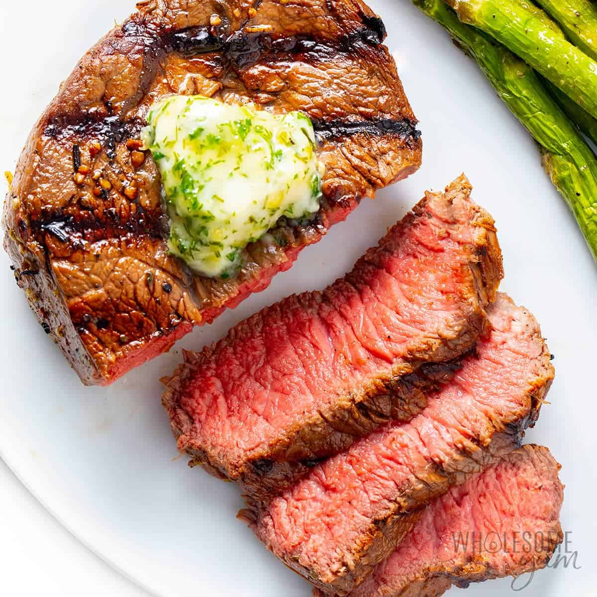

Grilled Sirloin Steak

Description:
Prep: 20 minutes
Cook time: 10 minutes
This perfectly cooked steak, enhanced with garlic butter goodness will make you look like a true grill master.
Sure to be a family-favorite.
Ingredients:
- 1 half cup of butter
- 4 garlic cloves, minced
- 2 tsp garlic powder
- 4 lbs beef top sirloin steaks
- Salt and pepper
Steps:
- Preheat an outdoor grill for high heat and lightly oil the grate.
- Melt butter in a small saucepan over medium-low heat; stir in minced garlic and garlic powder. Set aside.
- Season both sides of each steak with salt and pepper.
- Place steaks on preheated grill and cook 4 to 5 minutes per side. An instant-read thermometer inserted into the center should read 140 degrees F for medium doneness.
- Transfer steaks to warmed plates; brush the tops liberally with garlic butter and allow to rest for 2 to 3 minutes before serving.
Home